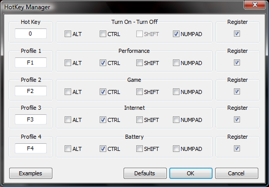

Some laptops are using clock modulation and multiplier reductions to lower the performance and power consumption of your computer. This is done deliberately to either allow your computer to run cooler or to allow your laptop to operate with a power adapter that is not sufficient to fully power your laptop and recharge its battery at the same time. When using ThrottleStop, it is strongly recommended that you monitor power consumption with a Kill-a-Watt meter or similar device and make sure that you don't exceed the capabilities of your power adapter. Use of ThrottleStop to bypass these throttling schemes or to overclock your computer is at your own risk and can result in permanent damage to your power adapter or computer or both which may not be covered by your warranty.
ThrottleStop can not disable any Intel throttling scheme. No matter how you have ThrottleStop setup, an Intel CPU that reaches the pre-defined throttling temperature will still throttle and if it reaches the pre-defined Intel thermal shutdown temperature, your CPU will shutdown to protect itself from damage. ThrottleStop only lets you control the throttling methods used by computer manufacturers. No software can be used to override the built in Intel throttling methods.
ThrottleStop is a performance modification and monitoring tool for Intel Core 2, Core i7 / i5 / i3 and Sandy Bridge processors. It allows you to make a variety of adjustments depending on your CPU model. The monitoring area on the right hand side will show you the current performance state of each thread of your CPU.
For ThrottletStop to work correctly in Vista and Windows 7 you need to go into the Control Panel - Power Options and select the High peformance Profile. Open up Change plan settings then select Change advanced power settings. After this click on Processor power management and finally Minimum processor state. Set this to 100%. This will allow ThrottleStop to control your CPU performance settings at idle and at full load instead of Windows.
In Windows XP you will need to go into the Control Panel - Power Options and under the Power Schemes tab select Home/Office Desk. Do not select Portable/Laptop. The Home Office/Desk setting will allow ThrottleStop to fully control the performance of your computer.
This is a feature of Intel CPUs since the Pentium 4 era and is also known as On Demand Clock Modulation. It was provided so users could manually reduce the performance of their computer to improve battery life or reduce heat output. It reduces the internal speed of your computer so when this is being used, your computer will run slower. In the Monitoring area the current modulation value will be shown in the CMod% column. Intel allows a user to select any value between 100.0% and 12.5% in steps of 12.5%. A reading of 100.0% shows that your computer is running at full speed and Clock Modulation is not being used to reduce the performance of your CPU. A reading of 50.0% means your computer is operating at half of its designed performance level.
This is a second type of throttling that is controlled by the on board chipset. It works the same as regular Clock Modulation and is another method that can be used to slow down your computer. This method is being used on some of the Dell and Acer laptops. It's possible that both clock modulation methods can be used at the same time but most laptops choose one method or the other but not both. All recent Intel chipsets should be correctly supported but some of the smaller chipset manufacturers like SiS might not be supported. If you have any problems with this feature you can add NoChipset=1 to the ThrottleStop.ini configuration file to disable this feature. You can also disable this feature if your laptop does not use this throttling method.
Adjusting this will give you some control over the multiplier your CPU uses. The default multiplier for a Core i7-720QM mobile processor is 12.0. When this value is set to Turbo, it tells the CPU that you would like it to use the default 12.0 multiplier plus as much turbo boost as is allowed. The i7-720 can use upto 9 bins of turbo boost so when running a single threaded task it's possible for the multiplier to go as high as 21.0 for brief moments. The result is that your CPU will go from 1600 MHz (12.0 x 133.3 MHz) up to 2800 MHz (21.0 x 133.3 MHz). As more cores enter the active state to take care of additional processes, the amount of turbo boost available will be reduced. When this CPU is fully loaded on all 8 threads, you will not likely see any turbo boost available so the multiplier will return to its default value of 12.0. The amount of turbo boost available at any instant in time is directly related to how many cores of your CPU are in the active state. The average multiplier is reported for each thread in the Monitoring section under the FID heading.
When this is set to any value less than the default multiplier, your computer will be limited to a maximum of that multiplier.
This is only available on Core 2 based CPUs and allows you to adjust the core voltage. Some users like to reduce the voltage of their CPUs to reduce its heat output and power consumption which can increase your battery life. When adjusting your core voltage, be careful not to adjust it too low or your computer might become unstable. I like adjusting it lower in small steps while running a stress testing program like Prime 95 with the Small FFTs option. Software adjustable core voltage is no longer available on the newer Core i7/i5/i3 processors.
This feature should let your CPU use its lowest available multiplier when your CPU is idle or lightly loaded. This feature is based on the theory that running a CPU as fast as possible so it can quickly get its work done and then spend more time in one of the deeper C3/C4/C6 sleep states is the best way to reduce power consumption. This is explained in the paper, Power Optimization – a Reality Check by Stephen Dawson-Haggerty, Andrew Krioukov and David Culle at The University of California, Berkeley.
http://www.cs.berkeley.edu/~krioukov/realityCheck.pdf
This feature can be fine tuned with the PowerSaver C0% value in the Options window.
This stands for Super Low Frequency Mode and is only available on some of the 45nm Core 2 mobile CPUs. Enabling this can result in your CPU running at half of its normal speed internally. The lowest multiplier available on a Core 2 CPU is 6.0 but when SLFM is activated, internally the CPU is operating as if the multiplier was half that much so in the monitoring area you could see FID numbers as low as 3.0. Starting with version 2.00, SLFM will only work at idle and only when using the Set Multiplier and Power Saver option.
To unlock this feature, you will need to go into the Options window and select Unlock Bidirectional PROCHOT. This will then allow you to adjust the bidirectional PROCHOT bit within your CPU. The graphic chips (GPU) in some laptops will signal the CPU to slow down and throttle using this method. By disabling this bit, some laptops will continue to run at full speed beyond the normal limits so you should closely monitor the CPU and GPU temperature when adjusting this bit. When the Unlock feature is not checked, this box will display the current status of the Bidirectional PROCHOT bit but you won't be allowed to change it. This feature was added for the Asus G51J laptop series and may or may not be of much use for other computers..
This lets you toggle whether your CPU can enter the C1E State at idle. When not using Power Saver, this option can cause your reported average multiplier to randomly hunt up and down when lightly loaded or at idle as the CPU rapidly enters and exits various sleep states..
Enabling this will create a log file in the ThrottleStop folder called ThrottleStopLog.txt. By default logging happens once per second.
This option when combined with the Log File option will result in data being written more often to the log file. When lightly loaded you might see as many as 8 entries per second instead of the default 1 entry per second.
When battery monitoring is activated, clicking on this button will display information about your battery. The display will cycle from Battery Percent to estimated time left to battery power consumption in watts and lastly it will show your battery capacity in watt hours (Wh). As your battery ages, its maximum capacity in watt hours will decrease over time.
If GPU temperature monitoring is supported and activated in the Options window, this button will show you the current GPU temperature as well as the minimum and maximum GPU temperature if you click on it. For systems with more than 1 GPU in SLI or CrossFire mode, ThrottleStop will monitor all GPUs in your system and will report the highest GPU core temperature.
This button opens up a benchmark program so you can compare the performance of your computer with other users. It computes a mathematical problem and you can select either 32M or 1024M to adjust the size of the calculation. If you have a multi-threaded CPU, select the appropriate number of threads to fully load your CPU and minimize the benchmark calculation time.
This button is an easy way to quickly stop ThrottleStop from making any changes to your CPU. It's equivalent to unchecking the first 4 boxes all at once.
This button will only appear on the Core 2 Extreme processors. If you click on this button it will unlock the maximum multiplier your CPU can use. You can then overclock your Core 2 CPU by increasing the maximum multiplier as well as the VID voltage if you need to. When you are finished, it's a good idea to click on this button again to lock the maximum multiplier.
This will reset the maximum multiplier to its default value for your Core 2 Extreme CPU. The previous menu options have been replaced by the UNLK and Reset buttons.
This lets you see and adjust the Turbo Ratio Limits for your Core i Extreme or K series CPU. Increasing these limits will allow your CPU to use a higher multiplier when Turbo Boost kicks in so it can run faster.
Clicking this button will recalculate your bus speed or base clock. For most CPUs, this value rarely changes after you boot up so to improve ThrottleStop efficiency, you can manually click on this button to recalculate this value. For most users, the only time this value changes is if you are using programs like SetFSB or SetPLL to modify your bus speed. Constantly recalculating the bus speed wastes a lot of CPU cycles but if you need to do this then try adding AutoUpdateBCLK=1 to the ThrottleStop.INI configuration file.
This button can limit what C States your CPU package will be allowed to enter. Using the C1 setting will prevent your CPU package from entering the lower sleep states which in some situations has been shown to significantly improve hard drive transfer rates when the CPU is lightly loaded. Using the C6 or C7 setting is best to maximize your battery run time. This button now opens up the new C States window for improved C States monitoring and adjustment on the newer Core i CPUs.
The C3 Auto Demotion and C1 Auto Demotion options have been shown to increase 4K Write speeds on SSD hard drives significantly. When running on battery power, leave these unchecked and set the C1 button in the picture as high as it can go so your CPU can enter the deeper C sleep states and conserve power.
This button lets you toggle between the CPU core temperature or a direct reading from the on chip Digital Thermal Sensor. The DTS counts down towards zero as your CPU gets hotter. To keep your CPU operating within the Intel temperature specification it is important to keep the DTS from counting down to zero. If this reaches zero, thermal throttling will begin which significantly slows down the performance of your CPU to prevent it from over heating further and triggering a thermal shutdown.
The CLR button clears the maximum high temperature column.
ExitTime=5 will force ThrottleStop to exit 5 seconds after it starts. This option is for users that like to have ThrottleStop set their CPUs up and then quietly exit.
TJMax=100 can be used to change the value of TJMax that ThrottleStop is using to calculate your CPU core temperature. The default value that ThrottleStop uses is correct for the majority of Intel processors so avoid changing this. You can go to the Intel website to look up information for your specific CPU if you are not sure. For the newer Core i CPUs, TJMax information is read directly from the CPU so there is no need to change this value. The temperature sensors that Intel uses were never designed for 100% accurate temperatures from idle to full load. They were only designed and calibrated to control thermal throttling and thermal shutdown so even with the correct TJMax, 100% accurate temperatures from these sensors are not possible.
ColumnWidth=49
This INI option controls the width of the columns in the monitoring area. If you are using a small system font then you might need to increase this to 58 so the 6 columns in the table fill out the entire table.
TimePeriodAC=5
TimePeriodDC=16
These values can be used to set the minimum timer resolution that your computer uses while ThrottleStop is running. Setting a value that is too low can interfere with your CPU entering the deeper sleep states which can increase power consumption and reduce your battery runtime. See the Microsoft documentation for the timeBeginPeriod function for more information.
http://msdn.microsoft.com/en-us/library/ms713413(v=vs.85).aspx
MobileCPU=1
If your Core 2 laptop processor is not correctly recognized as a mobile CPU then you can use this option so the VID voltage is reported correctly.
ExitDIDA=
If you want ThrottleStop to exit after it enters Dual IDA mode, set this to the appropriate number of seconds.
DCSwitchDelay=
For Core 2 CPUs, set this to the number of seconds that you would like to maximize the VID voltage after you switch to DC power. This can be useful if you are using SetFSB or SetPLL and you want these programs to have a chance to lower your front side bus speed before the VID voltage drops.
NoChipset=1
This option disables chipset monitoring. ThrottleStop is designed to work with Intel chipsets only. Use this if you are not using an Intel chipset or your laptop does not use Chipset Clock Modulation.
SplitQuad=1 will run half your quad at the maximum selected speed while the other half of your quad will use the lowest 6 multiplier.
SplitQuad=2 will swap what side of your quad runs at maximum speed and which side is limited to the 6 multiplier.
SplitQuad=3 lets both dual cores within a Core 2 Quad run at the maximum speed.
When this option is being used, you can double left mouse click on the ThrottleStop GUI at anytime to cycle between these 3 different modes. If you have no use for this option then set it to 0 or don't use it. The Set Multiplier option needs to be selected and ThrottleStop needs to be enabled for this to work.
It's mostly useful for users that are trying to find out what maximum speed each of their Core 2 Dual Cores are capable of inside their Quads. If you were running an application or game that was single threaded then you could overclock one Dual Core and use the Set Affinity... function in Windows to lock your application to the fast Dual Core while the other Dual Core could run at a low speed and VID to reduce the total heat output. Most of the INI options and especially this option, are intended for a very, very tiny percentage of extreme users.
AlarmWait=
By default, after a CPU temperature Alarm, as soon as the CPU temperature recovers, ThrottleStop will immediately switch back to the original profile. By setting this value to 10, it will let the CPU cool down to 10 degrees under the alarm temperature before switching back to the original profile. If this feature is useful thank mavo82 who is trying to control his hot Acer Aspire.
Priority=
This lets you adjust the priority that the ThrottleStop program runs at. The maximum value allowed is 3 which lets ThrottleStop run at the highest possible RealTime priority. If you have a laptop with throttling problems, this is probably your best choice. A value of 0 will let ThrottleStop run at a normal priority and a value of 1 is Above Normal and a value of 2 is High priority.
TechPowerUp=1
Use this to display the TechPowerUp logo and thank the W1zzard at TPU for his contributions to this program.
This lets you customize the name of each of your 4 profiles.
This section lets you select a font and color for the notification area icons. Font sizes of 10 or 11 usually work best. You can show icons for the CPU temperature, the GPU temperature as well as the CPU speed in MHz x 100. A CPU speed icon reading of 23 would be equivalent to 23 x 100 = 2300 MHz.
This allows you to set an alarm based on the current Digital Thermal Sensor (DTS) readings from your CPU. As the core temperature in an Intel CPU gets hotter and hotter, this sensor counts down towards zero which is when Intel thermal throttling will begin. That's typically not until 100C or 105C which can be hotter than many users want to run their laptop at. If you want, you could set a DTS Alarm of 20 so when any core within your CPU gets to within 20C of its maximum safe temperature it will trigger the alarm and automatically switch profiles. The Alarm profile you choose could be set so your CPU reduces the multiplier a couple of notches and slows down a little to help control the heat. When your core temperature is back below the alarm temperature then your CPU should automatically switch back to the original profile it was using before the alarm was triggered.
If your Nvidia or ATI video card (GPU) is supported you can also switch profiles based on its temperature. For this alarm enter the GPU temperature directly such as 100 for a GPU alarm set point of 100C.
This option adds a button to ThrottleStop and lets you monitor your battery level, battery power consumption, battery capacity and estimated battery run time based on your present usage.
This option is the equivalent of clicking on the Turn Off button in ThrottleStop when you switch to battery power. When you plug back in, ThrottleStop will automatially enter its active mode again. Setting a separate default AC and Battery profile might give you better control over your laptop compared to using this feature.
By default, when you exit ThrottleStop or click on the Turn Off button, your FID (CPU multiplier) and VID (Voltage Identification for Core 2 CPUs) will be automatically reset to their maximum to allow the operating system to regain full control of your CPU. When overclocking with a high BCLK speed and a reduced multiplier, this could cause a problem. For example, an E8400 with a bios setting of 4000 MHz (500.0 x 8.0) would try and switch to its default maximum multiplier which is 9.0. The CPU would instantly speed up to 4500 MHz (500.0 x 9.0) which would likely cause your computer to crash. If you are overclocking with a reduced multiplier in the bios then enable this option to prevent this from happening. Most users will not need to enable this feature.
Selecting this option will start ThrottleSop minimized to the system tray.
This changes the behavior of the X close gadget at the top right corner of ThrottleStop. Wit this option enabled, instead of ThrottleStop exiting it will minimize to the notification area / system tray.
See the above section on BD PROCHOT for more information.
Select either Nvidia or ATi GPU. Intel GPUs are not supported.
This controls the Power Saver feature. When the CPU load (C0%) is below this value, the CPU will use the lowest possible multiplier. When the C0% is above this value on any core, the CPU will use the highest multiplier.
This measurement on the newer Core i7/i5/i3 CPUs is a very accurate measurement of what percentage of time each thread of your CPU is in the C0 state. When fully loaded, it is typical to see a reading of 100.0%. This meter is similar to the Task Manager load meter but the two are not the same. C0% is more a measure of how hard your CPU is working internally. The C0% will not be able to report 100.0% when clock modulation throttling is being used to slow your processor down. The traditional Task Manager load meter will continue to report 100% even when internally the CPU might be running significantly slower. The C0% data can provide an early warning sign of possible clock modulation or other problems.
On most Core 2 mobile CPUs as well as some Core 2 desktop CPUs that can enter sleep states at idle, this value does not represent the CPU load. You will typically see the C0% start to increase on these CPUs as the processor idles down. A high value shows you that the active core on a Core 2 CPU is working hard at idle to keep up with the background tasks. That's a good thing. As the CPU runs slower to conserve energy and battery life, it must spend a higher percentage of time in the C0 state to keep up. At full load it will accurately represent load percentage.
This reports the percentage of time your CPU package is spending in each C sleep state. C3% and C6% reporting is only supported by the Intel Core i CPUs.
This reports the current clock modulation status of your CPU. Any reading less than 100.0% is a sign of throttling.
This reports the current Chipset Clock Modulation being applied to your CPU. As above, any reading less than 100.0% is a sign of throttling.
For more information on this feature, read this forum at Notebook Review.
This will try to get your CPU into Dual IDA mode when ThrottleStop starts. This is only possible with Core 2 CPUs that support Intel Dynamic Acceleration and have the EIST box unlocked. Starting with version 3.10, if C States is checked before you Start Dual IDA, C States will be turned back on after Dual IDA is engaged. The only problem with this is that once C States is enabled, ThrottleStop can no longer accurately check if your CPU is in Dual IDA mode or not. You will have to run a brief TS Bench benchmark to make sure that Dual IDA is still active. You will also have to manually click on EIST to stop Dual IDA. When using Dual IDA, I prefer to leave C States off to avoid any confusion. This new Dual IDA + C States feature was added because some laptops may show a slight improvement in battery run time with this feature.
If you check this, whenever your CPU enters Profile 1 it will try to get back into Dual IDA mode. If you use this option you don't need to use the Start Dual IDA option.
Some users prefer to exit ThrottleStop when they switch to battery power. Set this to the number of seconds for ThrottleStop to run before it exits when you switch to battery power.
This controls how frequently the TDP / TDC values are written to the CPU. A smaller number results in more frequent updates of this. Maximum performance for the Core i7/i5 UM CPUs in the Alienware M11x-R2 usually happens when this is set to about 8. For the 920XM and 940XM, you can leave this set to a high number like 1000 since constant updates are not needed for these CPUs.

This window lets you set up user defined keyboard hotkey combinations to control ThrottleStop. The first item lets you select a HotKey to toggle ThrottleStop on and off and the other 4 can be used to change profiles.
Valid HotKeys include the function keys from F1 to F24, any letter from A to Z, any number from 0 to 9 or any 2 digit hexadecimal value between 0x01 and 0xFF. A table of the Virtual Key Codes defined by Microsoft can be found here. Not all hexadecimal values listed in this table are supported.
http://msdn.microsoft.com/en-us/library/dd375731(v=vs.85).aspx
These HotKeys can then be modified with either ALT, CTRL or SHIFT or any combination there of. When using a number from 0 to 9, you can also specify if you would like that HotKey to be controlled by the Number Pad or not.
In the above example, the 4 profiles can be accessed on the fly by using the keyboard combination CTRL+F1, CTRL+F2, CTRL+F3 or CTRL+F4
The first HotKey lets you use the number 0 on the number pad on the right hand side of most keyboards to toggle ThrottleStop on and off. The NUMPAD option also works when NUM LOCK is set on most laptop keyboards that don't have a separate number key pad.
After each selection is made, check the Register box so your key combination can be registered with Windows. F12 is one of the few basic HotKeys that is not supported since it is reserved by Windows. If you would like to use F12, you will have to combine it with at least one of the ALT, CTRL, SHIFT modifier keys. You can use SHIFT or NUMPAD but not both at the same time so SHIFT+NUMPAD is not supported. Using just a letter or just a number without any further modification isn't a good idea since it will prevent that key from working correctly in other programs. Also be careful when using hexadecimal values. It's not a good idea to redefine the Enter key. Press OK so your selections are saved. The X gadget in the top right corner is equvalent to Cancel so any changes will be lost.
Many new laptops with Sandy Bridge CPUs can run extremely hot when gaming. This is not a defect in these CPUs. Some laptop manufacturers have decided to use cooling solutions that are simply not adequate to let the CPU and GPU perform at their rated speed.. Laptop models like the Acer Aspire 3830TG / 4830TG series use severe throttling schemes to control the CPU heat output which can significantly sacrifice performance. User testing has shown that ThrottleStop can be setup to control this situation. By using a second profile with Disable Turbo selected, ThrottleStop will slow your CPU down based on its core temperature. Simply go into the Options window and set an Alarm with a DTS value of 10 so ThrottleStop will switch to Profile 2 when the core temperature gets within 10C of the Intel designed thermal throttling temperature. This can help control your CPU temperature without using severe throttling so your games will continue to run smoothly. Replacing Acer's throttling scheme allows the CPU to run up to 100% faster which is the speed that Intel intended their Core i Sandy Bridge CPUs to run at. Check out this excellent post by robohgedhang for more information about this problem and the solution using ThrottleStop.
http://forum.notebookreview.com/7631774-post1378.html
After downloading and unzipping ThrottleStop, if it doesn't start then you might have a problem with your antivirus program blocking either ThrottleStop or the open source WinRing0 driver that ThrottleStop depends on. When ThrottleStop starts for the first time it will be in monitoring mode only so you can try the program without worrying about it changing any of your settings. Like ThrottleStop, this documentation is a work in progress. If you have any questions, send them to the email address in the About... box of ThrottleStop.
The Tech Inferno and Notebook Review forums are excellent sources of additional information.
http://forum.notebookreview.com/
Thanks to the developer of the open source WinRing0 library. Without it, ThrottleStop, RealTemp and many other programs would not have been possible. Further development of all free software depends on user support so please consider making a donation.
January 26, 2010 - Version 1.91 - Fixed minimum voltage for Core 2 mobile CPUs with 200 MHz BCLK. Thanks moral hazard from NotebookReview.
January 28, 2010 - Version 1.92 - Fixed SL / SU processor recognition. Thanks thendless from Notebook Review.
February 2, 2010 - Version 1.93 - Added proper VID detection of X7800, X7900, X9000, X9100 and QX9300 CPUs. Thanks spaanplaat from NoteBook Review.
March 28, 2010 - Version 2.00 Beta 1 - Added profile management, adjustable alarm based on CPU Digital Thermal Sensor (DTS) data and added the ability to toggle the bidirectional PROCHOT setting.
March 29, 2010 - Version 2.00 Beta 2 - Algorithm improved to increase aggressiveness during full load or during throttling incidents and added multiplier restore on exit option.
March 31, 2010 - Version 2.00 Beta 4 - Added GPU temperature monitoring and profile switching for Nvidia GPUs.
March 31, 2010 - Version 2.00 Beta 5 - Added minimum / maximum Nvidia GPU temperature reporting to the GPU button.
April 8, 2010 - Version 2.00 Beta 12 - Added battery level reporting and the ability to switch profiles based on battery level.
April 9, 2010 - Version 2.00 Beta 13 - Fixed a bug or two with the automatic profile switching features.
April 20, 2010 - Version 2.00 Beta 15 - Added C3 to the C-States toggle button for Core 2 CPUs and fixed a bug so all C-States remain either on or off. Thanks hna at Notebook Review.
April 21, 2010 - Version 2.00 Beta 16 - Added the ability to disable IDA / Turbo boost and to toggle SpeedStep / IDA when this feature is supported.
April 23, 2010 - Version 2.00 Beta 17 - Added an INI file option called DualIDA. If your motherboard supports the toggling of the EIST bit then set this option to 1 and it will try to lock Dual IDA mode so both cores are running at full speed. You can also use DualIDA=2 and if ThrottleStop successfully locks Dual IDA mode, it will automatically exit so you can add this to your start up sequence.
April 27, 2010 - Version 2.00 Build 18 - Added a right mouse option to enable Dual IDA mode. Changed how the SLFM feature works. Disabled Chipset Clock Modulation for the Intel PM965 chipset.
May 5, 2010 - Version 2.00 Build 19 - Added MHz reporting. Fixed incorrect multiplier being reported for Core 2 based QX CPUs when the default multiplier was not being used.
May 6, 2010 - Version 2.00 Build 20 - Added the 6.5 multiplier to support some Intel SU CPUs. This request will be ignored if your CPU does not support the 6.5 multiplier. Most 45nm Core 2 CPUs do not use this.
May 9, 2010 - Version 2.00 Build 22 - QX multiplier reporting and adjustment and Quad IDA mode is a work in progress. Adjusted the SLFM and Power Saver sensitivity.
May 10, 2010 - Version 2.00 Build 23 - Added an icon to the info button.
May 12, 2010 - Version 2.00 Build 24 - Enable Chipset Clock Modulation adjuster for all chipsets. Adjust this from minimum to maximum to make sure your chipset is supported correctly.
May 12, 2010 - Version 2.00 Build 25 - Fixed CPU recognition so Elkay's Extreme Q9300 is properly recognized as a QX9300 mobile CPU. Thanks Intel for giving the same CPU many different names.
May 23, 2010 - Version 2.00 Build 26 - Fixed a couple of minor issues for better QX multiplier support and fixed a problem with the same data being written to the log file twice in a row.
May 27, 2010 - Version 2.00 Build 27 - Found a work around for explorer.exe trying to access ThrottleStop.exe every 8 seconds. Thanks TigTex from Notebook Review.
June 3, 2010 - Version 2.50 - Added adjustable maximum FID / VID for Core 2 based Extreme processors only.
June 9, 2010 - Version 2.54 - Updated how MHz and FID is reported for SLFM mode. Fixed a bug where SLFM and IDA mode were not working correctly after resuming from hibernate.
July 1, 2010 - Version 2.55 - Added maximum turbo multiplier reporting and adjustable multiplier support for the Core i5-655K, Core i7-875K and the Core i7 Extreme Quad Core CPUs.
July 3, 2010 - Version 2.60 - Initial Core i7-980X support and possible turbo multiplier adjustment for this CPU. Added some CPU pop-up info to the notification area icon.
July 5, 2010 - Version 2.70 - Adjustable turbo power limits for Core i CPUs that support this featre. Correct detection of E8235 mobile CPU.
July 16, 2010 - Version 2.73 - Added NoChipset=1 option. Use this to disable Chipset Clock Modulation reporting and adjustment.
July 20, 2010 - Version 2.74 - A fix for the Core i Update BCLK bug and a new feature to restore the Core i XM turbo multiplier limits and Core i TDP/TDC limits after a resume from hibernate or stand by.
July 29, 2010 - Version 2.75 - Added Q9000/Q9100 to the mobile CPU list. First attempt to report MHz correctly when using SetFSB on some computers. Added DTS/Temperature button.
July 31, 2010 - Version 2.76 - Disabled SLFM option for Core 2 Quad mobile CPUs that don't support SLFM. Minor bug fix for incorrect MHz immediately after a stand by / hibernate /resume cycle.
August 2, 2010 - Version 2.77 - Added CPU / DTS temperature reporting to the notification / system tray area. Another minor tweak for better SetFSB compatibility.
August 13, 2010 - Version 2.80 - Added system tray temperature icons with adjustable fonts and minimum and maximum pop up information. Thanks W1zzard - TechPowerUp for this code. Also added a GPU temperature monitoring option to the Options window and added some more Intel E8x35 iMac CPUs to the mobile CPU list.
August 14, 2010 - Version 2.81 - Set the default notification area font to the correct size and added a font quality picker. Added Dual IDA to the Options box.
August 18, 2010 - Version 2.82 - Added adjustable TDP/TDC for each profile. Fixed C0% for Core 2 mobile CPUs at idle.
August 28, 2010 - Version 2.84 - Redesign of the adjustable TDP/TDC window. Added initial support for some of the early Core Solo and Core Duo chips. This is a work in progress.
September 1, 2010 - Version 2.85 - Added a system tray MHz icon, an improved and adjustable PowerSaver feature and the ability to select Core 2 Mobile CPU for ES or any mobile CPU that is not correctly recognized.
October 8, 2010 - Version 2.86 - Minor change to Dual IDA mode after a resume from standby or hibernate. Ignore GPU =127C to fix an issue with some buggy sensors.
October 14, 2010 - Version 2.89 - Added a Force TDP/TDC option for laptops like the Alienware M11x that keeps resetting these values. Increasing the Intel Turbo Boost TDP/TDC values will help the CPU to continue using full Turbo Boost when fully loaded. This can result in a 50% increase in full load peformance when using an Intel Core i5 or Core i7 UM processor. In the Options window, if you don't need this feature then set Force TDP/TDC to a high value like 1000 or higher. The Alienware M15x and M17x do not seem to need this feature. If you have a UM low power processor or a regular Core i5 CPU and need this feature then use a low value. Default is 16. Maximum performance is usually obtained with a value of about 8. More details about this feature can be found here.
http://forum.notebookreview.com/alienware-m11x/524257-how-supercharge-m11x-core-i5-i7-um-cpus.html
January 16, 2011 - Version 2.97 - Added Sandy Bridge support. It may not be possible to increase the turbo multipliers on these new CPUs when using ThrottleStop. Testing and feedback about this is needed.
March 7, 2011 - Version 2.99.7 - All new Dual IDA code for Core 2 CPUs. It should be able to get into Dual IDA mode quicker and can also enter Dual IDA when the CPU is significantly loaded. New INI option, ExitDIDA= so ThrottleStop will automatically exit as soon as it locks both cores into IDA mode. Added the ability to delay profile changes which is useful when using SetFSB or SetPLL. Added adjustable Windows Timer Resolution for both AC and DC which can significantly increase C3/C6 residency time. Added a new C State demotion INI option for Core i CPUs.
March 9, 2011 - Version 2.99.8 - Added a ColumnWidth= INI option in case you are using a small font and the table is too narrow. Default value is 49 and you might want to set this to about 58 if you have this issue. CStateDemotion=3 is increasing SSD 4K Write performance by over 100% on some laptops and is helping to fix the motherboard whine issue on some other laptops. Added a DelayedStart= INI option which will delay the start of ThrottleStop. If you follow the second post in The ThrottleStop Guide at Notebook Review forum, you probably won't need this option. I have also separated the 3 automatic exit options so they can all be used independently. ExitTime= will run ThrottleStop for the desired number of seconds before exiting. DCExitTime= will exit whenever you switch to battery power and can be adjusted in the Options window. ExitDIDA= will cause ThrottleStop to exit if you have a Core 2 mobile CPU after it successfully enters Dual IDA mode. You can now use any or all of these options, hopefully without any conflicts. Thanks Nando for all your testing and for keeping my nose to the grindstone. All TS users appreciate your help.
March 11, 2011 - Version 2.99.9 - Fixed the Low Battery Profile not switching correctly. Also did a few minor Dual IDA changes so Dual IDA requests will be halted during a profile change.
April 4, 2011 - Version 3.00 - Tech Inferno Edition. Fixed the Options not being saved when in profile 2, 3 or 4. Fixed the BD PROCHOT reporting. Fixed AC/DC default profile switching when the battery is rapidly discharging. Changed it so clock and chipset clock modulation will not automatically be turned off when ThrottleStop first starts so you can monitor for this problem before making any changes. Documented about a dozen rarely used INI file options. Added a SplitQuad INI option for the Core 2 Quad CPUs. See the above docs for more info.
June 26, 2011 - Version 3.10 - Added a HotKey Manager. Restored only being able to run one instance of ThrottleStop at a time. Added the ability to have C States enabled while in Dual IDA mode. Sandy Bridge power limits are now saved and restored when not locked.
August 17 , 2011 - Version 3.20 - Added a new C State reporting and adjustment window for Core i CPUs. Also added per profile Turbo Limits for the 920XM and 940XM CPUs. Sandy Bridge Turbo Boost time limits are now displayed in the Power Limits window. Added a Priority= INI option so you can lower the priority that ThrottleStop runs at if you don't need its maximum anti-throttling abilities.
August 18, 2011 - Version 3.20.1 - Added VID and power consumption reporting to the log file for Sandy Bridge CPUs. Thanks mw86.
August 20, 2011 - Version 3.30 - Added Sandy Bridge VID and power consumption monitoring to the log file. Fixed the Do Not Reset FID/VID option on Sandy Bridge CPUs.
August 22, 2011 - Version 3.30.1 - Fixed minimum VID on early QX6700.
September 4, 2011 - Version 3.40 - Added base multiplier reporting to the TRL window and changed the Disable Turbo feature for Core i CPUs.
September 27, 2011 - Version 3.50 - Block the Disable Turbo option when using a reduced multiplier for Sandy Bridge CPUs.
October 17, 2011 - Version 4.00 - Added more turbo multiplier options for Sandy Bridge CPUs as well as finer Clock Modulation control. Sandy Bridge CPUs can adjust Clock Modulation in steps of; 6.25%, older Core 2 and Core i CPUs are limited to steps of 12.5%. Restored Disable Turbo to function similar to pre 3.40 versions.